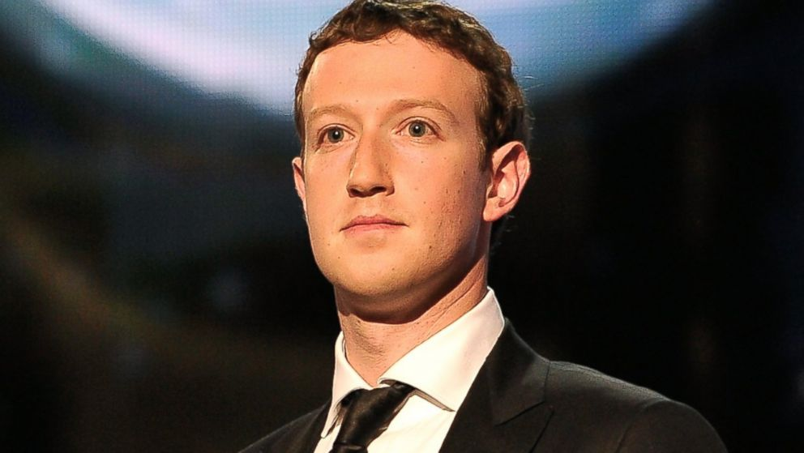

The Entrepreneur I chose to write about that impacted the world by tech is Mark Zurkerburg. Mark Elliot Zuckerberg was born on May 14, 1984. He is an American computer programmer and Internet entrepreneur. He is a co-founder of Facebook, and currently operates as its chairman and chief executive officer. His net worth is estimated to be $63.3 billion dollars as of May 2017, and he is ranked as the fifth richest person in the world. He was only a sophmore in harvard when he launched his app. The exact day was May 4 2004. Facebook got famous quick, and it was the main sourse of social media for a very long time. Although Mark had a law suit that is still going he still managed to have all this money. Mark has a couple of people helping him on facebook like Eduardo Saverin, Andrew McCollum, Dustin Moskovitz, and Chris Hughes. THey all made this app just so they can communicate with each other in harvard. A few weeks in, colleges like MIT and others asked if they can make it for them too. So they grow, they started from harvard, then other schools then everyone. Mark talks about how yahoo offered them 1 billion dollars. Just because they were still young and expected to grow they declined and now that is the best decision they have made.